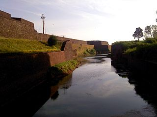

ANGLOFORT

St. Angelo Fort (also known as Kannur Fort or Kannur Kotta) is a fort facing the Arabian Sea, situated 3 km from Kannur, a city in Kerala state, south India..
MAPILA BAY

Mappila Bay (or Moppila Bay) is a natural harbor situated at Ayikkara in Kannur Municipal Corporation, Kerala state of South India. .
Back to home Back to districts